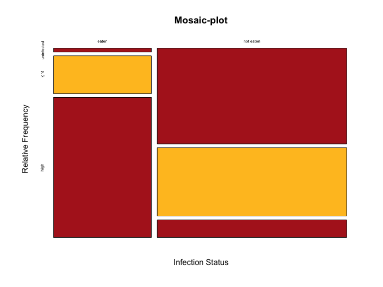
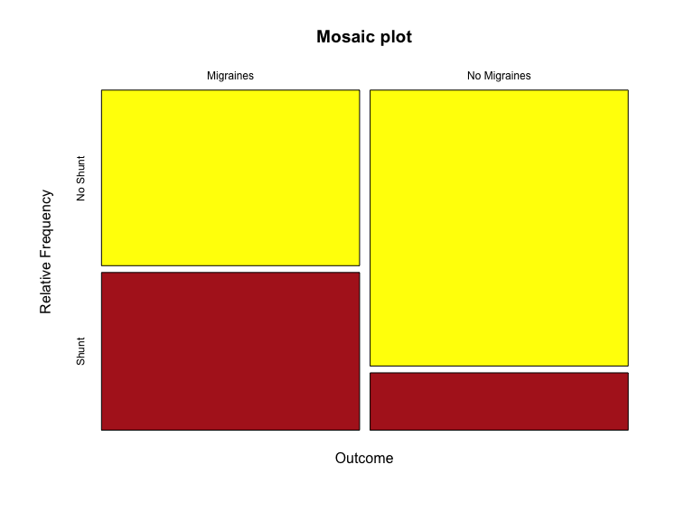

Contingency analysis comes into use when we need to test for the independence of two categorical variables. For example, did Male passengers on the Titanic have the same survival chances as Female passengers? Is lung cancer independent of smoking?
In order to do such tests we often rely upon odds and odds ratios. The odds of an event are calculated as the probability of a “success” divided by the probability of a “failure”. For e.g., on average 51 boys are born in every 100 births, so the probability of any randomly chosen delivery being that of a boy is \(\dfrac{51}{100}=0.51\).
Likewise the probability of any randomly chosen delivery being that of a girl is \(\dfrac{49}{100}=0.49\)
Note: If \(p=\) probability of success; \(1-p\) = probability of failure, then the odds of success: \(O = \dfrac{p}{1-p}\). Since with a sample we estimate the odds we have \(\hat{O} = \dfrac{\hat{p}}{1-\hat{p}}\)
The example below is the same one from the text.
| Outcome | Aspirin | Placebo | Total |
|---|---|---|---|
| Cancer | 1438 | 1427 | 2865 |
| No Cancer | 18496 | 18515 | 37011 |
| Total | 19934 | 19942 | 39876 |
What were the odds of (i) not getting cancer, and (ii) getting cancer for the Aspirin group versus the Placebo group? These were:
p.ncAspirin = (18496/19934); p.ncAspirin## [1] 0.9278619p.cAspirin = (1438/19934); p.cAspirin## [1] 0.07213806Odds.ncAspirin = p.ncAspirin/p.cAspirin; Odds.ncAspirin## [1] 12.86231p.ncPlacebo = (18515/19942); p.ncPlacebo## [1] 0.9284425p.cPlacebo = (1427/19942); p.cPlacebo## [1] 0.07155752Odds.ncPlacebo = p.ncPlacebo/p.cPlacebo; Odds.ncPlacebo## [1] 12.97477So the odds-ratio of not getting cancer for the Aspirin versus the Placebo group is:
OR.Aspirin = Odds.ncAspirin/Odds.ncPlacebo; OR.Aspirin## [1] 0.9913321In plain words: The odds of not getting cancer were slightly less for the Aspirin group than for the Placebo group.
Let \(p=\) the probability of success; \(1-p\) = probability of failure. Then, as previously defined, the odds of success are calculated as \(O = \dfrac{p}{1-p}\) and for two groups the odds ratio of success is \(O=\dfrac{O_1}{O_2}\). Table 1 (see below) maps out the minimum probability of success (\(=0\)) and the maximum probability of success (\(=1\)) for a single group. Note \(p=0\) means success never occurs and \(p=1\) means success always occurs, for this particular group. Expressing the probability as odds yields a corresponding range of values that are anchored below at \(0\) and above at \(\infty\) … these are the limits of the odds.
| \(p\) | \(1-p\) | \(odds\) |
|---|---|---|
| 0.00 | 1.00 | 0.00 |
| 0.10 | 0.90 | 0.11 |
| 0.20 | 0.80 | 0.25 |
| 0.30 | 0.70 | 0.43 |
| 0.40 | 0.60 | 0.67 |
| 0.50 | 0.50 | 1.00 |
| 0.60 | 0.40 | 1.50 |
| 0.70 | 0.30 | 2.33 |
| 0.80 | 0.20 | 4.00 |
| 0.90 | 0.10 | 9.00 |
| 1.00 | 0.00 | \(\infty\) |
The implication is that the odds follow an asymmetric, highly skewed distribution and hence require a transformation in order for us to come up with some estimate of the uncertainty surrounding the odds. The log-transformation achieves this by normalizing the distribution of the odds.
However, what would be the limits of odds ratios? The answer: It depends on what \(p\) is for any group. Let us see this with an example. Assume that the following fictional data represent passenger survival on the Titanic. Let us assume that there were a total of 100 passengers, 50 Male and 50 Female. Let us also assume that all Males and Females survived. What would the contingency table look like?
| Sex | Survived | Died | Total |
|---|---|---|---|
| Male | 50 | 0 | 50 |
| Female | 50 | 0 | 50 |
| Total | 100 | 0 | 100 |
What then is the probability that a Male passenger survived? It is \(= \dfrac{50}{50} = 1\) and hence the probability that a Male passenger died is \(1 - \hat{p}_{male} = 1 - 1 = 0\). What about the Female passengers? Well, the probability that a Female passenger survived is also \(= \dfrac{50}{50} = 1\) and hence the probability that a female passenger died is \(1 - \hat{p}_{female} = 1 - 1 = 0\). Now let us calculate the odds of survival for Male passengers \(= \dfrac{1}{0} = \infty\) and likewise the odds of survival for Female passengers \(= \dfrac{1}{0} = \infty\).
So this tells us that one extreme situation may be where for each group the odds of survival are \(\infty\). When this happens the odds ratio will be \(\dfrac{\infty}{\infty}\), and this is undefined so we would be unable to calculate an odds ratio!! The R code and output below shows you what happens.
M1 = matrix(c(50, 50, 0, 0), nrow=2)
rownames(M1) = c("Male", "Female")
colnames(M1) = c("Survived", "Died")
M1## Survived Died
## Male 50 0
## Female 50 0library(mosaic)oddsRatio(M1, verbose=TRUE)##
## Odds Ratio
##
## Proportions
## Prop. 1: 1
## Prop. 2: 1
## Rel. Risk: 1
##
## Odds
## Odds 1: Inf
## Odds 2: Inf
## Odds Ratio: NaN
##
## 95 percent confidence interval:
## 1 < RR < 1
## NaN < OR < NaN
## NULL## [1] NaNNote that this result also obtains if no Male or Female passenger survived.
M2 = matrix(c(0, 0, 50, 50), nrow=2)
rownames(M2) = c("Male", "Female")
colnames(M2) = c("Survived", "Died")
M2## Survived Died
## Male 0 50
## Female 0 50oddsRatio(M2, verbose=TRUE)##
## Odds Ratio
##
## Proportions
## Prop. 1: 0
## Prop. 2: 0
## Rel. Risk: NaN
##
## Odds
## Odds 1: 0
## Odds 2: 0
## Odds Ratio: NaN
##
## 95 percent confidence interval:
## NaN < RR < NaN
## NaN < OR < NaN
## NULL## [1] NaNWhat if the distribution were different, where all Males died and all Females survived?
M3 = matrix(c(0, 50, 50, 0), nrow=2)
rownames(M3) = c("Male", "Female")
colnames(M3) = c("Survived", "Died")
M3## Survived Died
## Male 0 50
## Female 50 0oddsRatio(M3, verbose=TRUE)##
## Odds Ratio
##
## Proportions
## Prop. 1: 0
## Prop. 2: 1
## Rel. Risk: Inf
##
## Odds
## Odds 1: 0
## Odds 2: Inf
## Odds Ratio: Inf
##
## 95 percent confidence interval:
## NaN < RR < Inf
## NaN < OR < Inf
## NULL## [1] Inf… and finally if things were reversed and all Males survived but no Females survived.
M4 = matrix(c(50, 0, 0, 50), nrow=2)
rownames(M4) = c("Male", "Female")
colnames(M4) = c("Survived", "Died")
M4## Survived Died
## Male 50 0
## Female 0 50oddsRatio(M4, verbose=TRUE)##
## Odds Ratio
##
## Proportions
## Prop. 1: 1
## Prop. 2: 0
## Rel. Risk: 0
##
## Odds
## Odds 1: Inf
## Odds 2: 0
## Odds Ratio: 0
##
## 95 percent confidence interval:
## 0 < RR < NaN
## 0 < OR < NaN
## NULL## [1] 0Hence we see two limits when the odds ratio is defined: The confidence intervals are bounded below by \(0\) and bounded above by \(\infty\).
As a rule, then, if in a \(2 \times 2\) contingency table the count in any cell is zero the odds-ratio will be undefined. Consequently, when any cell is \(0\), in practice you will often see the odds-ratio calculated by adding a small constant (usually \(0.5\)) to every cell frequency (see below).
| Sex | Survived | Died | Total |
|---|---|---|---|
| Male | 50.5 | 0.5 | 51 |
| Female | 50.5 | 0.5 | 51 |
| Total | 101 | 1 | 102 |
Now the odds ratio and its associated confidence intervals can be calculated (see below):
M5 = matrix(c(50.5, 50.5, 0.5, 0.5), nrow=2)
rownames(M5) = c("Male", "Female")
colnames(M5) = c("Survived", "Died")
M5## Survived Died
## Male 50.5 0.5
## Female 50.5 0.5oddsRatio(M5, verbose=TRUE)##
## Odds Ratio
##
## Proportions
## Prop. 1: 0.9902
## Prop. 2: 0.9902
## Rel. Risk: 1
##
## Odds
## Odds 1: 101
## Odds 2: 101
## Odds Ratio: 1
##
## 95 percent confidence interval:
## 0.9621 < RR < 1.039
## 0.01946 < OR < 51.38
## NULL## [1] 1In a classic design one might employ what is called a cohort study – you first identify a set of units (for example, persons) that represent the population, you then identify whether they have been exposed to some condition or not (for example, whether they smoke or not) and then you follow them over time to see if some outcome results or not (for example, whether they get lung cancer or not).
| Group | Lung Cancer | No Lung Cancer | Total | Incidence of Lung Cancer |
|---|---|---|---|---|
| Smoker | a | b | a + b | \(\dfrac{a}{a+b}\) |
| Non-Smoker | c | d | c + d | \(\dfrac{c}{c+d}\) |
The Relative Risk of Lung Cancer is then calculable as: \[\dfrac{\left(\dfrac{a}{a+b}\right)}{\left(\dfrac{c}{c+d}\right)} \]
| Group | Lung Cancer | No Lung Cancer | Total | Incidence of Lung Cancer |
|---|---|---|---|---|
| Smoker | 84 | 2916 | 3000 | \(\dfrac{84}{3000}=0.028\) |
| Non-Smoker | 87 | 4913 | 5000 | \(\dfrac{87}{5000}=0.0174\) |
\[ RR = \dfrac{0.028}{0.0174} = 1.609195\]
killi = read.csv(url("http://whitlockschluter.zoology.ubc.ca/wp-content/data/chapter09/chap09e3ParasiteBrainWarp.csv"))
head(killi); names(killi)## infectionStatus eaten
## 1 uninfected eaten
## 2 uninfected not eaten
## 3 uninfected not eaten
## 4 uninfected not eaten
## 5 uninfected not eaten
## 6 uninfected not eaten## [1] "infectionStatus" "eaten"\(H_0\): Parasite infection and being eaten are independent
\(H_A\): Parasite infection and being eaten are not independent
\(\alpha=0.05\)
Reject \(H_0:\) if \(p-value \leq 0.05\)
Do not reject \(H_0\) otherwise
killi$infectionStatus = ordered(killi$infectionStatus, c("uninfected", "light", "high"))
tab.k = table(killi$eaten, killi$infectionStatus)
tab.k##
## uninfected light high
## eaten 1 10 37
## not eaten 49 35 9mosaicplot( tab.k, col = c("firebrick", "goldenrod1"), cex.axis = 0.5, main = "Mosaic-plot", sub = "Infection Status", ylab = "Relative Frequency")
chisq.test(tab.k, correct=FALSE)##
## Pearson's Chi-squared test
##
## data: tab.k
## X-squared = 69.756, df = 2, p-value = 7.124e-16Given the \(p-value \approx 0\) we can easily reject \(H_0\); the data suggest that parasite infection and being eaten are not independent.
Fisher’s exact test is used if the assumptions of the \(\chi^2\) are violated. In fact, as a rule just go with Fisher’s test if you are dealing with a \(2 \times 2\) contingency table and have small samples. The example below runs the test with the data on vampire bats.
bats = read.csv(url("http://whitlockschluter.zoology.ubc.ca/wp-content/data/chapter09/chap09e4VampireBites.csv"))
head(bats); names(bats)## estrous bitten
## 1 estrous bitten
## 2 estrous bitten
## 3 estrous bitten
## 4 estrous bitten
## 5 estrous bitten
## 6 estrous bitten## [1] "estrous" "bitten"tab.b = table(bats$bitten, bats$estrous)
tab.b##
## estrous no estrous
## bitten 15 6
## not bitten 7 322\(H_0:\) State of estrous and vampire bat attack are independent
\(H_A:\) State of estrous and vampire bat attack are not independent
\(\alpha=0.05\); standard decision rule applies
fisher.test(tab.b, conf.int=TRUE, conf.level=0.95, alternative="two.sided")##
## Fisher's Exact Test for Count Data
##
## data: tab.b
## p-value < 2.2e-16
## alternative hypothesis: true odds ratio is not equal to 1
## 95 percent confidence interval:
## 29.94742 457.26860
## sample estimates:
## odds ratio
## 108.3894Given the \(p-value\) we can easily reject \(H_0\); the data suggest that state of estrous and vampire bat attack are not independent.
The \(G-test\) is useful for large samples and when dealing with complex experimental research designs.
library(RVAideMemoire)
G.test(tab.b)##
## G-test
##
## data: tab.b
## G = 71.451, df = 1, p-value < 2.2e-16It has been hypothesized that the white rump of pigeons serves to distract predators like the peregrine falcons, and therefore it may be an adaptation to reduce predation. To test this, researchers followed the fate of 203 pigeons, 101 with white rumps and 102 with blue rumps. Nine of the white-rumped birds and 92 of the blue-rumped birds were killed by falcons.
- Show the results in a frequency table (with the response as the rows and the explanatory variable as the columns). What association is suggested?
rumps = read.csv(url("http://whitlockschluter.zoology.ubc.ca/wp-content/data/chapter09/chap09q04PigeonRumps.csv"))
head(rumps); names(rumps)## rumpColor survivalWithFalcon
## 1 blue survived
## 2 blue survived
## 3 blue survived
## 4 blue survived
## 5 blue survived
## 6 blue survived## [1] "rumpColor" "survivalWithFalcon"tab.p = table(rumps$survivalWithFalcon, rumps$rumpColor)
addmargins(tab.p)##
## blue white Sum
## killed 92 9 101
## survived 10 92 102
## Sum 102 101 203tab.p2 = prop.table(tab.p, 1); tab.p2##
## blue white
## killed 0.91089109 0.08910891
## survived 0.09803922 0.90196078The table suggests that 91% of the blue-rumped pigeons were killed versus only 9% of the white-rumped pigeons.
Do the two kinds of pigeons differ in their rate of capture by falcons? Carry out an appropriate test.
\(H_0:\) Predation by falcons is independent of rump-color
\(H_A:\) Predation by falcons is not independent of rump-color
\(\alpha=0.05\)
chisq.test(tab.p, correct=FALSE)##
## Pearson's Chi-squared test
##
## data: tab.p
## X-squared = 134.13, df = 1, p-value < 2.2e-16fisher.test(tab.p)##
## Fisher's Exact Test for Count Data
##
## data: tab.p
## p-value < 2.2e-16
## alternative hypothesis: true odds ratio is not equal to 1
## 95 percent confidence interval:
## 33.70502 270.81972
## sample estimates:
## odds ratio
## 89.50586Regardless of the test used, we can safely Reject \(H_0\) given that the \(p-value \approx 0\). The data suggest that predation by falcons is not independent of rump-color
What is the estimated odds ratio for capture of the two groups of pigeons? What is the 95% confidence interval for the odds ratios?
Note: For the mosaic library, “successes” should be located in column 1, and the treatment of interest should be located in row 2. The odds ratio is calculated as \((\text{Odds row 2}) / (\text{Odds row 1})\). So we’ll have to recreate the table.
tab.p # The original table##
## blue white
## killed 92 9
## survived 10 92tab.pp = table(rumps$rumpColor, rumps$survivalWithFalcon)
tab.pp # The corrected table with "killed" as column 1 and "blue" as row 2##
## killed survived
## blue 92 10
## white 9 92library(mosaic)
oddsRatio(tab.pp, conf.level=0.95, verbose=TRUE)##
## Odds Ratio
##
## Proportions
## Prop. 1: 0.902
## Prop. 2: 0.08911
## Rel. Risk: 0.09879
##
## Odds
## Odds 1: 9.2
## Odds 2: 0.09783
## Odds Ratio: 0.01063
##
## 95 percent confidence interval:
## 0.05279 < RR < 0.1849
## 0.00413 < OR < 0.02738
## NULL## [1] 0.01063327The estimated odds ratio is 0.0106 and the 95% confidence interval is \([0.00413, 0.02738]\)
Reed frogs, a species living in West Africa, have been observed hopping away from grass fires long before the heat of the fire reached the area they were in. This finding led to the hypothesis that the frogs might hear the fire and respond well before the fire reaches them. To test this hypothesis, researchers played three types of sound to samples of reed frogs and recorded their response. Twenty frogs were exposed to the sound of fire, 20 were exposed to the sound of the fire played backward (to control for the range of sound frequencies present in the real sound), and 20 were exposed to equally loud white noise. Of these 60 frogs, 18 hopped away from the sound of the fire, 6 hopped away from the sound of the fire played backward, and 0 hopped away from the sound of the white noise.
- Illustrate these data with a frequency table. What association is suggested?
frogs = read.csv(url("http://whitlockschluter.zoology.ubc.ca/wp-content/data/chapter09/chap09q07FrogsFire.csv"))
head(frogs); names(frogs)## sound direction
## 1 fire away
## 2 fire away
## 3 fire away
## 4 fire away
## 5 fire away
## 6 fire away## [1] "sound" "direction"tab.f = table(frogs$direction, frogs$sound)
tab.f##
## backwards fire noise
## away 6 18 0
## not away 14 2 20tab.ff = prop.table(tab.f, 2)
tab.ff##
## backwards fire noise
## away 0.3 0.9 0.0
## not away 0.7 0.1 1.0The table suggests an association between the type of sound and frogs hopping away.
Do the data provide evidence that reed frogs change their behavior in response to the sound of fire?
\(H_0:\) Reed frogs do not change their behavior in response to the sound of fire
\(H_A:\) Reed frogs do change their behavior in response to the sound of fire
\(\alpha=0.05\); the usual decision rule applies
fisher.test(tab.f)##
## Fisher's Exact Test for Count Data
##
## data: tab.f
## p-value = 2.328e-09
## alternative hypothesis: two.sidedchisq.test(tab.f, correct=FALSE)##
## Pearson's Chi-squared test
##
## data: tab.f
## X-squared = 35, df = 2, p-value = 2.511e-08Regardless of the test used, the \(p-value\) is almost 0 and so we can easily reject \(H_0\). The data suggest that reed frogs do change their behavior in response to the sound of fire
Migraine with aura is a potentially debilitating condition, yet little is known about its causes. A case-control study compared 93 people who suffer from chronic migraine with aura to a sample of 93 healthy patients. The researchers used trans-esophageal echocardiography to look for cardiac shunts in all of these patients. (A cardiac shunt is a heart defect that causes blood to flow from the right to the left in the heart, causing poor oxygenation.) Forty-four of the migraine patients were found to have a cardiac shunt while only 16 of the people without migraine symptoms had this heart defect.
- Is this an observational or experimental study?
It is an observational study
- Show the association between migraines and cardiac shunts with a mosaic plot.
M = matrix(c(49, 44, 77, 16), nrow = 2,
dimnames = list(Treatment = c("No Shunt", "Shunt"), Outcome = c("Migraines", "No Migraines"))
)
M## Outcome
## Treatment Migraines No Migraines
## No Shunt 49 77
## Shunt 44 16mosaicplot(t(M), col=c("yellow", "firebrick"), main="Mosaic plot", cex.axis=0.75, ylab="Relative Frequency")
- How strong is the association between migraines and cardiac shunts? Calculate the odds ratio for migraine, comparing the patients with and without cardiac shunts.
Remember: You need the successes in column 1 and the treatment in row 2. Our matrix “M” meets these criteria.
oddsRatio(M, verbose=TRUE)##
## Odds Ratio
##
## Proportions
## Prop. 1: 0.3889
## Prop. 2: 0.7333
## Rel. Risk: 1.886
##
## Odds
## Odds 1: 0.6364
## Odds 2: 2.75
## Odds Ratio: 4.321
##
## 95 percent confidence interval:
## 1.444 < RR < 2.462
## 2.2 < OR < 8.488
## NULL## [1] 4.321429The odds ratio is 4.321429
- What is the 95% confidence interval for this odds ratio?
The 95% confidence interval is \([2.200, 8.488]\)